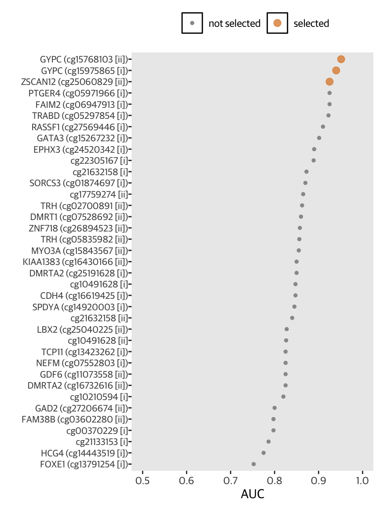
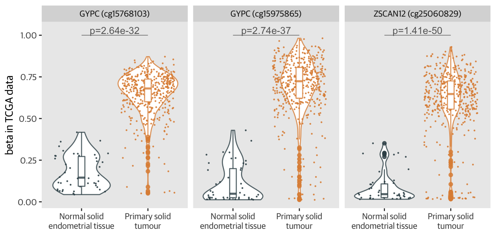
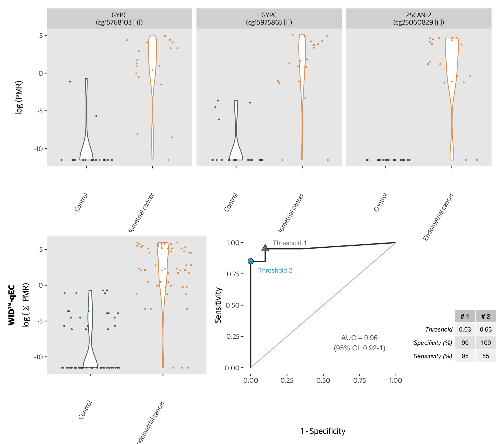

mldat <- mldat %>%
filter(set == "FORECEE Pilot") %>%
droplevels() %>%
mutate(type = factor(type, levels = c("Control", "Endometrial cancer")))
dat <- mldat %>%
select(10:46) %>%
droplevels()
rocs <- data.frame(matrix(nrow = ncol(dat), ncol = 3))
for (i in 1:ncol(dat)){
x <- roc(as.factor(mldat$type), dat[,i])
rocs[i,2] <- x$auc[[1]]
rocs[i,3] <- coords(x, "best", transpose = TRUE)[[1]]
}
rocs[,1] <- colnames(dat)
colnames(rocs) <- c("name", "auc", "threshold")
rocs <- rocs[order(rocs$auc, decreasing = TRUE),]
rocs[,1] <- gsub("\n", " ", rocs[,1])
colours <- ifelse(grepl("ZSCAN12", rocs[,1]) == TRUE | grepl("GYPC", rocs[,1]) == TRUE, "selected", "not selected")
rocs %>%
ggplot(aes(auc,
reorder(name, auc),
colour = colours,
size = colours)) +
geom_point() +
xlab("AUC") +
ylab("") +
scale_colour_manual(values = c("gray60", cols[2]),
name = "") +
scale_size_manual(values = c(1, 2.5),
name = "") +
xlim(c(0.7,1)) +
theme(legend.position = "top",
panel.grid.major = element_blank(),
axis.text.y = element_text(size = 8,
hjust = 1),
legend.key = element_rect(fill = alpha("white", 0.0)),
panel.grid = element_blank())
library(TCGAbiolinks)
query <- GDCquery(project = "TCGA-UCEC",
data.category = "DNA Methylation",
platform = "Illumina Human Methylation 450",
sample.type = c("Primary Tumor",
"Solid Tissue Normal"))
query_pheno <- GDCquery_clinic(project = "TCGA-UCEC",
type = "clinical")
dat <- query$results[[1]]
ind <- match(dat$cases.submitter_id, query_pheno$submitter_id)
tcga_pheno <- query_pheno[ind,]
save(tcga_pheno, file = "tcga_pheno.Rdata")
GDCdownload(query, method = "client", files.per.chunk = 10) # RIP internet
data <- GDCprepare(query)
save(data, file = "data.Rdata")
library(SummarizedExperiment)
beta <- assays(data)[[1]]
beta <- na.omit(beta)
save(beta, file = "beta.Rdata")# df <- tcga %>%
# nest(-cg) %>%
# mutate(test = map(data, ~ tidy(t.test(beta ~ type, .x)))) %>%
# unnest(test) %>%
# mutate(padj = p.adjust(p.value, n = 378254)) %>% # number of CpGs in beta
# mutate(p = paste0("p=",signif(padj,3))) %>%
# select(cg, p) %>%
# mutate(cg = factor(cg))
tcga %>%
ggplot(aes(x = type,
y = beta,
colour = type)) +
geom_violin() +
geom_jitter(size = 0.2)+
geom_boxplot(width = 0.1) +
scale_colour_manual(values = cols[c(1,2)],
name = "") +
facet_wrap(~cg) +
annotate("segment",
x = 1, xend = 2,
y = 1, yend = 1,
size = 0.25,
colour = "gray40") +
xlab("") +
ylab("beta in TCGA data") +
theme_gray() +
theme(legend.position = "none",
panel.grid = element_blank(),
text = element_text(family = "Guardian Sans")) +
geom_text(data = tcga_pvals,
mapping = aes(x = 1.5, y = 1.03, label = p),
colour = "gray40",
size = 3.5)
mldat <- mldat %>%
pivot_longer(c(`ZSCAN12\n(cg25060829 [ii])`, `GYPC\n(cg15768103 [ii])`, `GYPC\n(cg15975865 [i])`), names_to = "locus", values_to = "pmr")
p1 <- mldat %>%
ggplot(aes(x = type,
y = log(pmr+0.00001),
colour = type)) +
geom_violin(width = 0.2) +
geom_jitter(size = 0.5,
aes(colour = type)) +
facet_wrap(~locus) +
xlab("") +
ylab(expression(paste("log (PMR)", sep = ""))) +
scale_colour_manual(values = cols[c(1,2)],
name = "") +
theme(axis.text.x = element_text(angle = 60,
hjust = 1),
panel.grid = element_blank(),
legend.position = "none"
)
p2 <- mldat %>%
ggplot(aes(x = type,
y = log(sum+0.00001),
colour = type)) +
geom_violin(width = 0.2) +
geom_jitter(size = 0.5,
aes(colour = type)) +
xlab("") +
ylab(expression(paste(atop(bold("WID™-qEC"), "log ("~Sigma~" PMR)")))) +
scale_colour_manual(values = cols[c(1,2)],
name = "") +
theme(axis.text.x = element_text(angle = 60,
hjust = 1),
panel.grid = element_blank(),
legend.position = "none")
p3 <- plot_roc(as.factor(mldat$type), mldat$sum, "sum(PMR)") +
theme(panel.grid = element_blank())
design <- "
AAAAA
BBCCD
"
y <- roc(mldat$type, mldat$sum)
cut <- cutoffs <- coords(y, "best", best.method = "youden")
cut_round <- round(cut, 2)
colnames(cut_round) <- c("Threshold", "Specificity (%)", "Sensitivity (%)")
cut_round$`Specificity (%)` <- cut_round$`Specificity (%)`*100
cut_round$`Sensitivity (%)` <- cut_round$`Sensitivity (%)`*100
cut_round <- t(cut_round)
colnames(cut_round) <- c("# 1", "# 2")
p3 <- p3 +
geom_point(aes(x = 1-cut$specificity[2],
y = cut$sensitivity[2]),
shape = 21,
size = 3,
fill = cols[3]) +
annotate("text",
label = "Threshold 2",
x = 1-cut$specificity[2]+0.17,
y = cut$sensitivity[2]-0.07,
colour = cols[3],
size = 2.95) +
geom_point(aes(x = 1-cut$specificity[1],
y = cut$sensitivity[1]),
shape = 24,
size = 3,
fill = cols[6]) +
annotate("text",
label = "Threshold 1",
x = 1-cut$specificity[1]+0.17,
y = cut$sensitivity[1]+0.05,
colour = cols[6], size = 2.95)
p1 + p2 + p3 +
gridExtra::tableGrob(cut_round,
theme = ttheme_default(base_size = 8)) +
plot_layout(design = design)